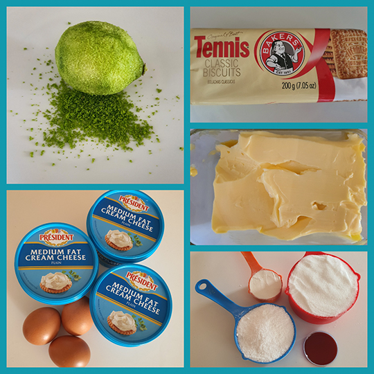
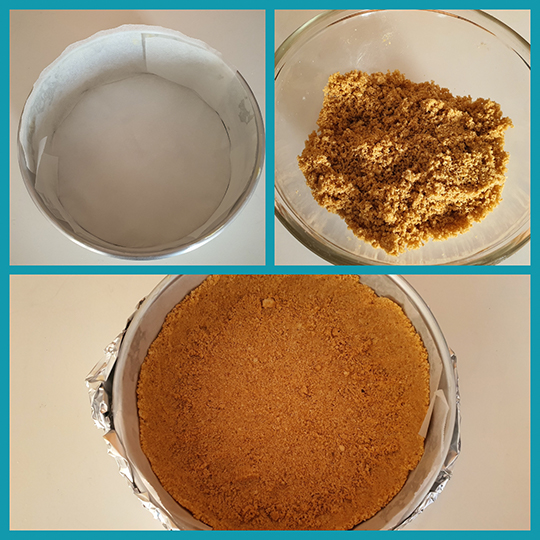
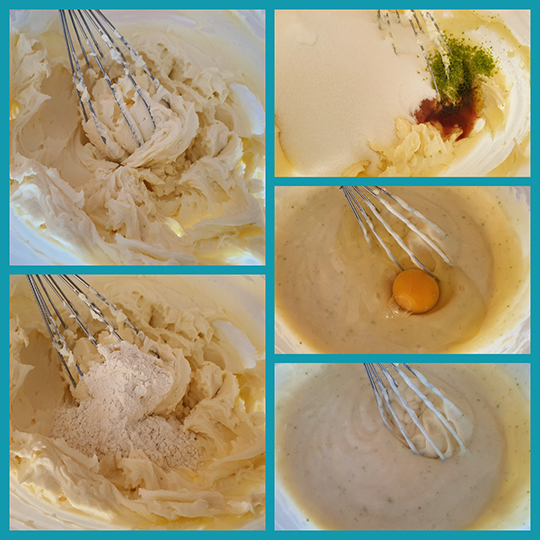
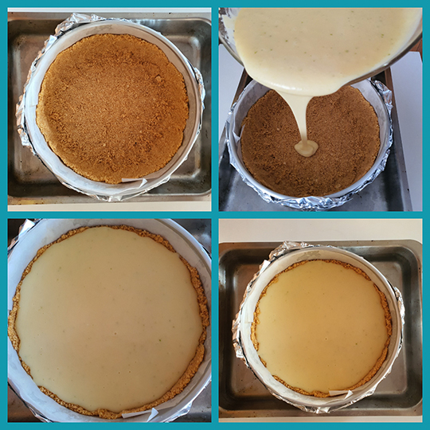

Easy Baked Cheescake Recipe:
Biscuit Base:
- 200g Tennis Biscuits
- 60g Butter @ room temperature
Cheesecake Filling:
- 500g Cream Cheese
- 2 Tablespoons plain flour
- 1 Teaspoon Vanilla Essence
- 1 ½ cups castor sugar
- Zest of one lemon
- 3 eggs @ room temperature
Ingredients

- Pre-heat the oven to 160C/320F (Standard oven)
- Line a 20cm (8inch) springform/loose bottom pan with baking paper. Make sure that you have lined the bottom as well as the sides.
- Wrap the outside of the pan with tin foil, ensuring that there are no holes in the bottom.
- Break the biscuits roughly by hand, and then put the pieces into a food processor.
- Blend until it is a fine crumb. Then add the butter and mix it into the fine crumbs with your fingers, until it resembles a slightly moist sand.
- Add the mixture into the prepared tin. Then use a spatula to evenly spread it over the base as well as slightly up the sides.
Instructions
Preparation:
Cheesecake Base:

- Use a mixer or beater to beat the cream cheese until smooth.
- Add the flour and mix until just combined.
- Add the vanilla, sugar & lemon zest. Beat until just combined.
- Add the eggs one at a time, mixing each one into the batter one at a time, ensuring that you don’t over mix. Overmixing aerates the batters, which we don’t want.
- Place your pan with prepared crust in a big oven safe baking sheet.
- Pour the batter into the pan with the prepared crust.
Cheesecake Filling:

- Take boiling water and pour it into the baking sheet, ensuring that the water does not go higher than the tin foil level of the cake pan.
- Bake the cheesecake for 80-90min, checking regularly.
- The top should be a light golden brown, near perfectly flat and it should jiggle slightly when you gently wiggle the pan.
- Once done, remove the cake pan from the baking tray with water, and place the cake back in the over to cool, with the over door open about 20cm.
- Once cooled, remove the cheesecake from the pan gently and place on a plate or serving dish.
- Allow to further cool in the refrigerator for at least 3 hours before serving.
Baking Method:

The Final Product!
After cooling your Cheesecake, you can top the cheesecake with a variety of different items like berries, mascarpone or even caramel. The choice is completely up to you. I prefer eating it in all its creamy glory with no toppings.

Nutritional InformationAmounts per Serving |
||||||
| Servings | Calories | Total Fat | Cholesterol | Sodium | Carbohydrates | Protein |
|---|---|---|---|---|---|---|
| 12 | 366 | 21.3g | 98mg | 254mg | 40.7g | 5.8g |